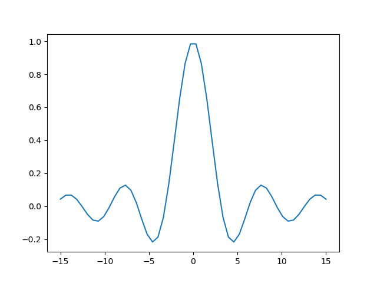

Orgmode voorbeeld
Table of Contents
1. Toetsaanslagen
- Ik gebruik kleine letter
avoor deA-toets. - Ik gebruik hoofdletters
C-voor deCtrl-toets,M-voor de Alt (meta)-toets enS-voor deShift-toets.C-cis dusCtrl-C,C-c C-cis dat tweemaal enC-M-ais gelijktijdigCtrl,AltenAindrukken.
ENTER,TABenESCzijn de toetsen die je verwacht.- Raak je verstrikt? Druk
ESC ESC ESC ESCen je kunt weer typen. - Zie ook http://pub.vandersluys.nl/download/GettingStartedWithEmacs.pdf (met name sectie 1.2 en het begin van 1.3)
2. TODO Te doen [1/3]
2.1. DONE MarColumn december schrijven [6/6]
[X]klokken taken, projecten[X]agenda, plannen, takenlijsten (TODO/DONE, OPEN/CLOSED), ideeenlijsten[X](interne) links[X]tabellen, simpele spreadsheets[X]export, publish: plain text, html, md, LaTeX/PDF, odt, rST, …[X]code, formules
2.2. PROGRESS File met eenvoudige voorbeelden toevoegen [5/6]
2.2.1. DONE Tekststijl
- vet
- cursief
- onderlijnd
doorgehaaldcodeofvebatim
2.2.2. DONE Takenlijst en kopjes [33%]
[X]Zie 2[X]inspringen:- zet de cursor op een item (b.v. in deze lijst) en typ
Alt-pijl rechts/links - hetzelfde voor kopjes
- zet de cursor op een item (b.v. in deze lijst) en typ
[ ]slepen:- zet de cursor op een item en typ
Alt-pijl op/neer - op/neer wisselt voor een item (met dezelfde indentatie en indien mogelijk)
- hetzelfde voor kopjes (van hetzelfde level)
- zet de cursor op een item en typ
[ ]lijstsymbool veranderen:- zet de cursor op een item en typ
Shift rechts/links - symbolen springen van tussen
+/-/*/1./1)(*indien mogelijk)
- zet de cursor op een item en typ
[X]item aan/uitvinken:- zet de cursor op het item en typ
C-c C-c - het aantal of percentage in het kopje erboven (gemaakt door
[/]of[%]te typen) verandert mee
- zet de cursor op het item en typ
[ ]TODO veranderen:- zet de cursor op een kopje en typ
Shift rechts/links - als alle subkopjes DONE zijn, wordt het hogere kopje dat ook (mits er TODO staat)
- zet de cursor op een kopje en typ
[ ]Nieuw item:Alt-ENTER
[ ]Nieuw kopje:Ctrl-ENTER
[ ]Nieuwe lijst maken- Genummerd:
- typ een
1.of1)gevolgd door een spatie en de omschrijving - typ
Alt-ENTERvoor het volgende item (telt automatisch door)
- typ een
- Ongenummerd:
- typ een
+,-of (indien subitem)*gevolgd door een spatie en de omschrijving - typ
Alt-ENTERvoor het volgende item met hetzelfde symbool
- typ een
- Definitie:
- Definitie
- een definitie is een ongenummerd item met een keyword, gevolgd door een dubbele dubbele
punt (
::) en de definitie. - (no term)
Alt-ENTERvraagt om de volgende definitie met hetzelfde symbool
- Vink (radio button):
- typ een item symbool of nummer, gevolgd door een spatie,
[ ], weer een spatie en de omschrijving - de
[ ]licht op ten teken dat de radio button actief is Alt-ENTERgeeft een nieuw item, maar geen lege radio button (bug?)C-c C-cop de regel switcht tussen[ ]en[X]
- typ een item symbool of nummer, gevolgd door een spatie,
- Genummerd:
2.2.3. DONE Links
- Interne link: zie 2
- Externe link: https://github.com/MarcvdSluys/NLLGG-docs
- Externe link met onschrijving: NLLGG docs
2.2.4. DONE Tabel/spreadsheet
- typ
|- TABvoor een horizontale lijn - typ
x|x^2|x^3 TABin de nieuwe regel voor de header - typ
-rechts tegen de|voor nog een lijn - in de linker kolom, typ
1 ENTER 2 ENTERetc. - onder x2, typ
=$1**2 TAB.$1staat voor kolom 1. - onder x3, typ
=$1**3 TAB - ga naar de regel met
TBLFM(tabelformule) onder de tabel en typC-c C-c
| x | x2 | x3 |
|---|---|---|
| 1 | 1 | 1 |
| 2 | 4 | 8 |
| 3 | 9 | 27 |
| 4 | 16 | 64 |
| 5 | 25 | 125 |
2.3. PROGRESS Meer geavanceerde voorbeelden
2.3.1. DONE Formule
LaTeX moet geinstalleerd zijn…
- inline: typ
$\int_0^\infty \frac{\sin x}{x} dx$en drukC-c C-x C-lDit is een mooie formule \(\int_0^\infty \frac{\sin x}{x} dx\), maar wel ingewikkeld. - tussen de tekst: typ
\[\int_0^\infty \frac{\sin x}{x} dx\]en drukC-c C-x C-l\[\int_0^\infty \frac{\sin x}{x} dx\]
2.3.2. ACTIVE Code
- Elisp werkt altijd?
- Elisp (emacs lisp script)
- Typ
C-c C-, svoor een#+begin/end_src-block en voeg zelfelisptoe - Typ wat code in en return een waarde (zie voorbeeld hieronder)
- In het codeblok, typ
C-c C-cen beantwoord de vraag onderin metyes ENTER - Het resultaat verschijnt in een
RESULTS-blok onder de code.
(concat (emacs-version) "\nOrgmode " (org-version))GNU Emacs 27.2 (build 1, x86_64-pc-linux-gnu, GTK+ Version 3.24.29, cairo version 1.16.0) of 2021-10-01 Orgmode N/A
- Typ
- Bash
Bash moet geinstalleerd zijn en Babel moet geactiveerd zijn voor Bash…
echo "Mijn homedirectory is $HOME"
Mijn homedirectory is /home/sluys
- Python
Python moet geinstalleerd zijn en Babel moet geactiveerd zijn voor Python…
- Typ
C-c C-, svoor een#+begin/end_src-block en voeg zelfpythontoe - Typ wat code en return een waarde
- In het codeblok, typ
C-c C-cen beantwoord de vraag onderin metyes ENTER - De returnwaarde verschijnt onder de code in
x=3 y=4 z=x*y return z
12
import numpy as np import matplotlib.pyplot as plt x = np.linspace(-15,15) plt.plot(x, np.sin(x)/x) plt.savefig('Orgmode_voorbeeld.png') return 'Orgmode_voorbeeld.png' # Return filename to orgmode

- Typ
- Python + Bash
Print een lijst met een selectie van files in deze directory in bash. Ik wil zowel (
both) de code als het resultaat exporteren (naar bijvoorbeeld .md of .pdf). En ik geef de code een naam (ls) zodat de output hieronder gebruikt kan worden:ls -lb Orgmode_voorbeeld[._]*
-rw-r--r-- 1 sluys sluys 9213 Dec 12 12:31 Orgmode_voorbeeld_ascii.txt -rw-r--r-- 1 sluys sluys 26861 Dec 12 12:10 Orgmode_voorbeeld.html -rw-r--r-- 1 sluys sluys 9443 Dec 12 12:30 Orgmode_voorbeeld.md -rw-r--r-- 1 sluys sluys 37266 Dec 12 12:31 Orgmode_voorbeeld.odt -rw-r--r-- 1 sluys sluys 8509 Dec 12 12:15 Orgmode_voorbeeld.org -rw-r--r-- 1 sluys sluys 308286 Dec 12 12:31 Orgmode_voorbeeld.pdf -rw-r--r-- 1 sluys sluys 23293 Dec 12 12:32 Orgmode_voorbeeld.png -rw-r--r-- 1 sluys sluys 10239 Dec 12 12:31 Orgmode_voorbeeld.rst -rw-r--r-- 1 sluys sluys 12082 Dec 12 12:31 Orgmode_voorbeeld.tex -rw-r--r-- 1 sluys sluys 10634 Dec 12 12:32 Orgmode_voorbeeld_utf8.txt
Gebruik awk om de filename en grootte te nemen van de files uit
lsen maak een tabel:BEGIN { OFS="|" }; { print $5, $9}
9213 Orgmodevoorbeeldascii.txt 26861 Orgmodevoorbeeld.html 9443 Orgmodevoorbeeld.md 37266 Orgmodevoorbeeld.odt 8509 Orgmodevoorbeeld.org 308286 Orgmodevoorbeeld.pdf 23293 Orgmodevoorbeeld.png 10239 Orgmodevoorbeeld.rst 12082 Orgmodevoorbeeld.tex 10634 Orgmodevoorbeeldutf8.txt Gebruik Python om o.a. de kleinste en grootste file te vinden in de tabel van
awk:print(table[0]) # Eerste rij van de tabel zoals ingelezen print("Aantal bestanden: %i" % len(table)) print("Kleinste bestand: (%i b) %s" % tuple(min(table))) print("Grootste bestand: (%i b) %s" % tuple(max(table))) print("Totale grootte: %0.3f kb" % (sum([x for x,y in table]) / 1000))
[9213, 'Orgmode_voorbeeld_ascii.txt'] Aantal bestanden: 10 Kleinste bestand: (8509 b) Orgmode_voorbeeld.org Grootste bestand: (308286 b) Orgmode_voorbeeld.pdf Totale grootte: 455.826 kb